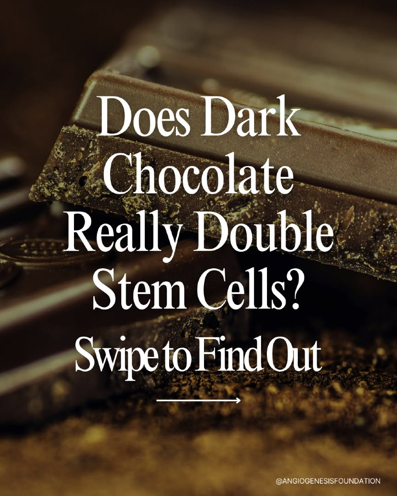

Food choices can increase the number and activity of stem cells.
Stem cells are what repair damage to aging arteries.
The science in this video is a little
oversimplified, but the main points are correct.
Louis shares a Dr. William Li video on foods and dietary patterns that affect stem cell number and function, which he says repair damage to aging arteries. He cautions that the science is somewhat oversimplified but the main points are correct.
Food choices can increase the number and activity of stem cells.
Stem cells are what repair damage to aging arteries.
The science in this video is a little
oversimplified, but the main points are correct.
 ▶Video · YouTube · Reverse Aging RevolutionENHANCE Your STEM CELLS Naturally with These FOODS & Dietary Patterns!!!Dr. William Li talks about foods that restore our stem cell function and dietary patterns that can enhance and oppositely harm our stem cells in this video. More About Dr. William Li Please visit www.drwilliamli.com __________________________________________________________________________ Please note that the links below are affiliate links, so we receive…youtu.be
▶Video · YouTube · Reverse Aging RevolutionENHANCE Your STEM CELLS Naturally with These FOODS & Dietary Patterns!!!Dr. William Li talks about foods that restore our stem cell function and dietary patterns that can enhance and oppositely harm our stem cells in this video. More About Dr. William Li Please visit www.drwilliamli.com __________________________________________________________________________ Please note that the links below are affiliate links, so we receive…youtu.be

Louis shares a UCSF crossover study in men with heart disease where high-flavonoid cocoa improved flow-mediated dilation and increased circulating angiogenic cells. He links this to the COSMOS cocoa-extract trial, in which cardiovascular death fell 27%.
A short post notes that a cocoa extract supplement was found to lower hsCRP. The linked news article describes an investigation from the COSMOS trial in which cocoa flavanols lowered inflammation markers in aging adults.

The NIA Interventions Testing Program found epicatechin raised median lifespan of male mice by about 5% and mitoglitazone, a next-generation TZD, by about 9%. Effects were seen only in males, and this is mouse data.
A six-month double-blind pilot RCT in 44 older adults with PAD tested a daily flavanol-rich cocoa drink against placebo. The cocoa group walked farther 2.5 hours after consumption while placebo declined, with better calf muscle mitochondrial activity, capillary density and perfusion.
Review of diet-based ways to curb platelet hyperactivity, a driver of thrombosis, CVD, diabetes and cancer. It notes aspirin resistance in 25-30% of people and bleeding risks, and highlights omega-3s, polyphenols, tomato extract (Fruitflow) and kiwifruit as promising natural antiplatelet agents.

Louis shares a summary of cocoa flavanol evidence. An updated meta-analysis of 25 RCTs showed modest drops in blood pressure and improved flow-mediated dilation. The COSMOS trial gave 500 mg/day of flavanols to 21,442 older adults for a median 3.6 years, with total CV events down 10% (within chance) and CV deaths down 27%. A 2026 severity-ranked reanalysis favored cocoa.